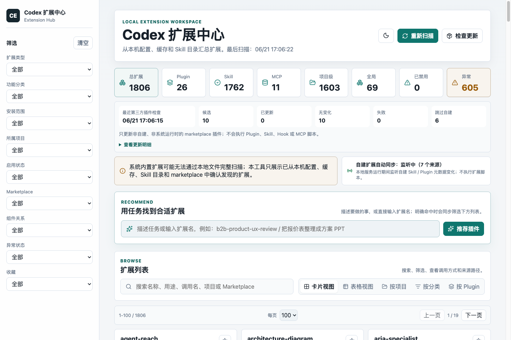

按 Plugin、Skill、MCP、项目级、全局和异常状态快速理解本机扩展结构。
Local-first Codex workspace
把散落的 Codex 扩展，变成可管理资产。
Codex Extension Hub 会读取本机已有的 Plugin、Skill、MCP 和 App 元数据，用一个本地网页告诉你装了什么、怎么调用、哪里重复、哪个更适合当前任务。

安装时，把目标说给 agent。
公开教程不放远程一行安装脚本。把仓库地址、安装目标和安全边界说明白，让本地 agent 自己读 README、装依赖、打开工作台并验证页面。
Agent install prompt
请给我的 Codex 安装以下本地工具：
https://github.com/Daviddwt/codex-extension-hub
请先自行读取 README 和安全注意事项，下载或克隆最新版本，安装依赖，
运行本地扫描，启动网页工作台，打开浏览器并完成页面可用性验证。
不要执行扫描到的 Plugin、Skill、Hook 或 MCP 脚本。
不要上传本机扩展数据。它解决的是日常小麻烦。
插件和 skill 装多以后，真正费时间的是想不起来装了什么、该调用哪个、哪些重复了。这个工作台把这些信息放到一个地方。
输入要做的事，本地推荐器根据名称、用途、分类和提示词给出候选扩展。
同名扩展、元数据缺失、marketplace 不一致都会被标记出来，方便清理。
第三方 marketplace 插件可检查更新，自建和系统托管插件按策略跳过。
只读扫描元数据，不执行插件脚本，不启动 MCP，不上传本地数据。
适合沉淀团队常用 skill/plugin 命名、用途说明和调用入口。
用起来只要几步。
告诉 agent 目标，打开本地页面，按任务搜索，点异常卡片清理配置提醒，再按策略检查第三方插件更新。
用自然语言告诉 agent 仓库地址、安装目标和安全边界。
本地打开 127.0.0.1，只在自己的电脑上查看扩展数据。
按名称、用途、调用名、项目路径或 marketplace 搜索。
检查异常项和第三方更新，把扩展环境整理干净。
可以直接拿去发。
适合 X、公众号、论坛和团队内部分享。重点说清楚：本地运行、看得懂、能维护、不执行插件脚本。
我做了一个本地版 Codex 扩展中心。它会读取你电脑上已有的 Plugin、Skill、MCP、App 和 Hook 元数据，整理成一个网页工作台：能看见装了什么、怎么调用、哪里重复，也能按任务推荐可能合适的扩展。全程本地运行，不执行插件脚本，不上传数据。
以后类似教程，都用这类说法。
不让读者复制远程脚本。直接给 agent 一个自然语言任务，让它读取注意事项、下载最新版本、安装、打开工作台并验证。
Reusable agent prompt
给我的 Codex 安装以下地址的插件：
https://github.com/Daviddwt/solution-factory
请自行读取注意事项、下载最新分享包、安装插件、
打开网页工作台并完成验证。
不要执行未知脚本；如果需要权限、登录态或本机路径，请先说明再继续。GitHub 同时照顾中英文读者。
README、教程和传播素材都提供中英文版本，降低转发和二次传播成本。
中文入口
README.zh-CN.md、tutorial.zh-CN.md、social-posts.zh-CN.md。
English entry
README.md, tutorial.en.md, and social-posts.en.md for GitHub and community sharing.